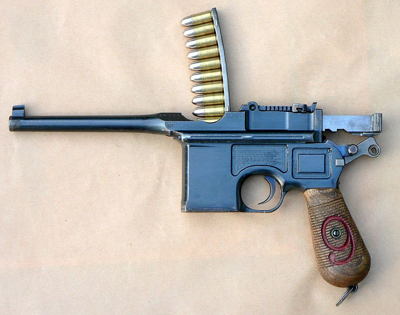
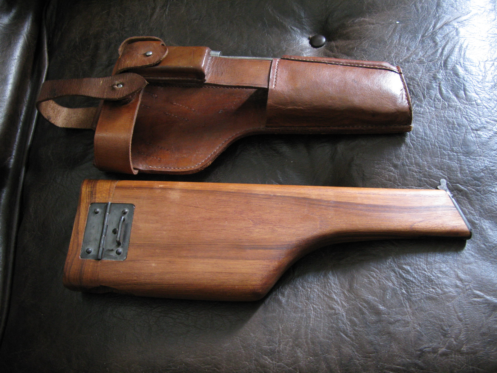
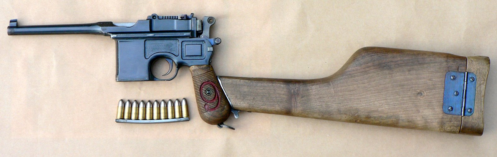

Общие сведения
Маузер К96 (нем. Mauser C96 от Construktion 96) — немецкий самозарядный пистолет, разработанный в 1895 году.
Схема работы этого пистолета — короткий ход ствола с запиранием личинкой.
Компоновка пистолета — характерная для ранних автоматических пистолетов, унаследованная от магазинных винтовок: коробчатый магазин находится перед спусковой скобой
В качестве приклада «Маузера» используется его кобура, изготовленная из орехового дерева, на переднем срезе которой имелась стальная вставка с выступом и механизмом фиксации для примыкания приклада к рукояти пистолета, при этом откидная крышка кобуры упиралась в плечо стрелка. Кобура носилась на портупее через плечо, могла быть обшита снаружи кожей и иметь карманы для размещения запасной обоймы и инструментов для разборки и чистки оружия. Длина кобуры-приклада составляла 35,5 см, ширина в передней части 4,5 см, ширина в задней части 10,5 см. Эффективная дальность стрельбы с примкнутой кобурой-прикладом достигала 200-300 м. Также кобура-приклад позволяет повысить эффективность стрельбы очередями из модификации пистолета, разработанной в 1931 году (так называемая «модель 712» или «Маузер» образца 1932 года), на которой есть переводчик режима огня для выбора типа стрельбы: одиночными выстрелами или очередями.